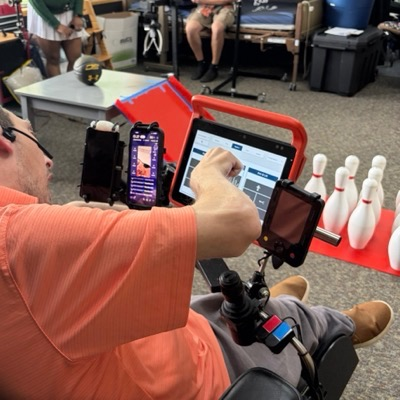
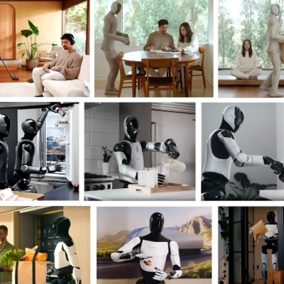
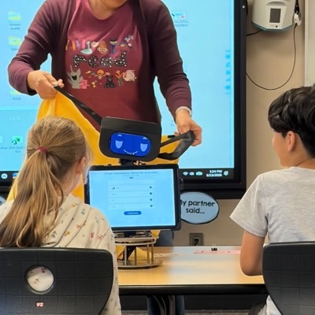
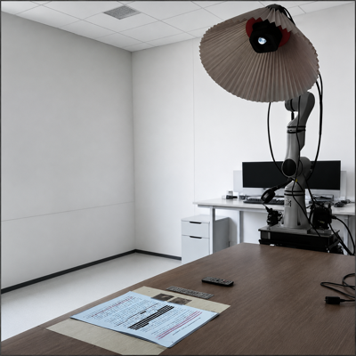
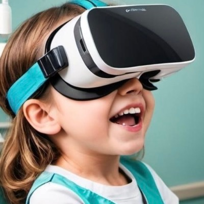

About me
I'm an MS student in Human Centered Design & Engineering at the University of Washington, Seattle, advised by Dr. Maya Cakmak in the Human-Centered Robotics Lab, where I research accessibility robotics and robot privacy. I also collaborate with Dr. Belinda Y. Louie and Dr. Elin A. Björling on social robotics for K-6 education, and with Dr. Jessica Jenness and Dr. Elin A. Björling on how digital interventions can support teens' depression care.
In summer 2024, I earned a BS in Creative Media from the City University of Hong Kong, where I was supervised by Dr. Yuhan Luo in the BiWell Lab, researching minors' healthcare.
Research Interests
My research sits at the intersection of Human-Computer Interaction, Human-Robot Interaction, and Extended Reality . I design and evaluate interactive systems — from VR environments to robotic agents and wearable devices — that support communication, emotional wellbeing, and engagement for diverse populations, including children, patients, and adolescents. Using mixed-methods approaches that combine co-design, prototyping, and empirical user studies, I investigate how embodied and immersive technologies can be made more accessible, emotionally resonant, and ethically responsible. I am particularly interested in pursuing a PhD to continue this work, exploring how human-centered design methods can shape the next generation of intelligent, empathetic interactive systems.
Selected Work

Playing Through Robots to Enable Physical Participation
This project investigates how teleoperated mobile manipulators can enable people with severe motor limitations to participate physically in play, leisure, and social activities. Drawing on four case studies, it examines how robot mediated action supports agency, turn taking, collaboration, meaningful roles, and participation beyond traditional activities of daily living.

Revisiting Privacy and Utility in Teleoperated Consumer Home Robots
This project examines privacy risks arising from teleoperators remotely controlling emerging consumer home robots. Through two surveys and a controlled user study, we investigate users' context dependent privacy preferences, evaluate visual privacy filters, and measure how reducing sensor fidelity affects task performance, informing privacy aware design for real world home robot deployment.

Social Robots for Developing Problem Solving Skills in K-6 Education
This research investigates how social robots can improve problem solving among K-6 students by encouraging them to understand problems, generate and compare strategies, explain their reasoning, revise unsuccessful approaches, and reflect on solutions. It also explores how robotic scaffolding and peer discussion can support flexible thinking and independent learning.

Designing an Interactive Companion Robot to Enhance Critical Reading and Thinking in Academic Contexts
This research investigates how an interactive companion robot can support critical academic reading through subtle attention cues and reflective dialogue. The robot encourages students to identify key ideas, evaluate evidence, reconsider interpretations, and articulate their reasoning, improving comprehension, metacognitive strategy use, and the structure and coherence of critical writing. [roman26]

Exploring Multi-Stakeholder Perspectives on Using VR to Reduce Children's Dental Anxiety
This research explores how virtual reality can help reduce children's dental anxiety by centering the perspectives of children, parents, and dentists. Through co-design workshops and interviews, it identifies opportunities for VR to provide emotional relief, treatment education, peer support, and a greater sense of control while considering safety and clinical workflow. [cscw25]
In the Misc. section, you'll find some of my coding projects and additional information about me. Feel free to explore if you have the time!